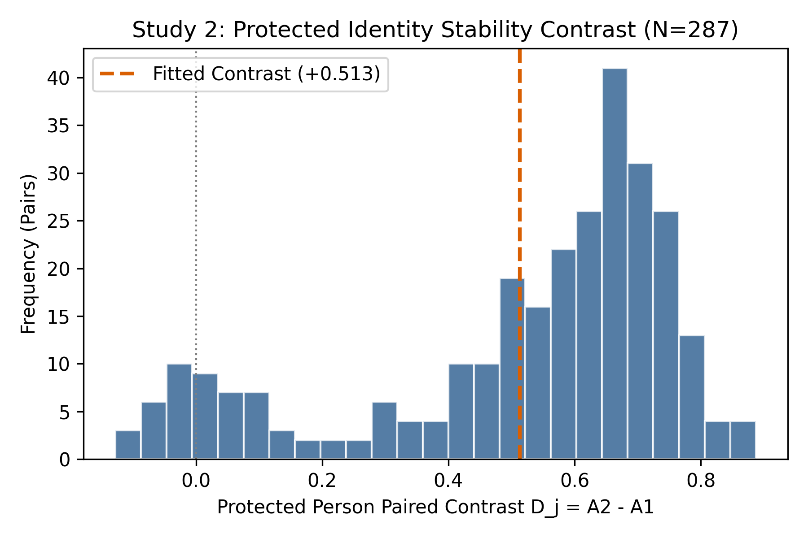
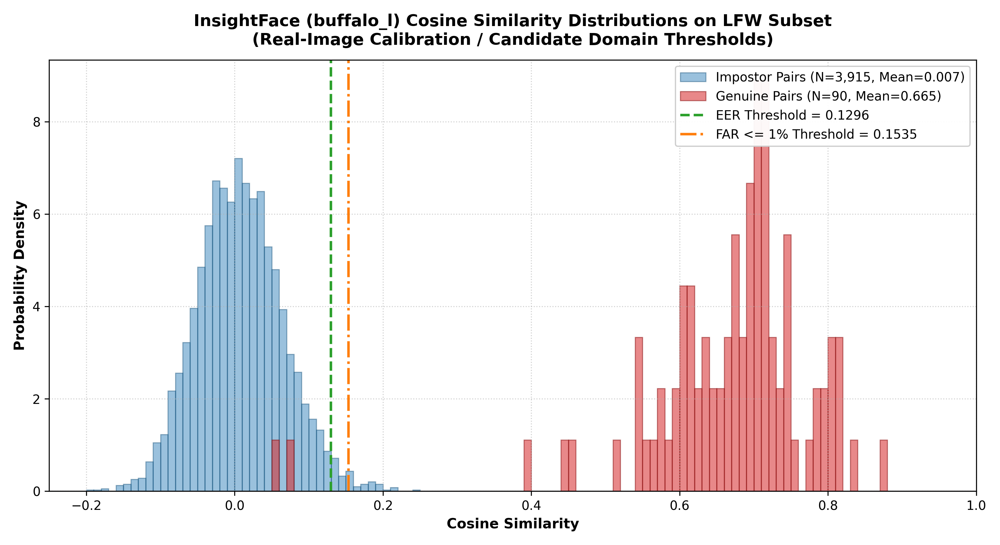
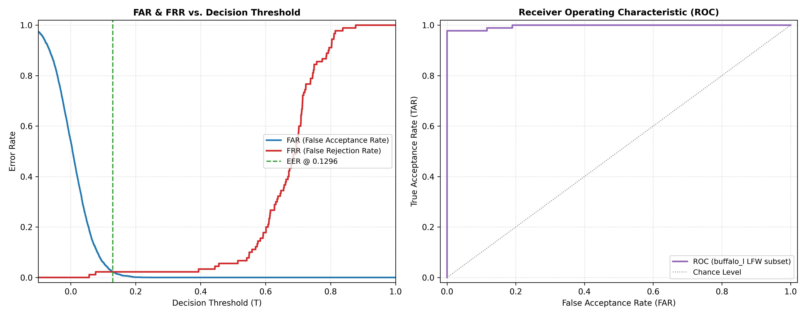

Research Overview
The scientific problem of cross-person identity change in source-coupled personalized generation
Personalized text-to-image models such as UniPortrait allow conditioning on one or more reference identities. When two persons are conditioned simultaneously, a fundamental empirical question arises: how does conditioning on a target person's identity affect the co-present protected person's identity preservation?
This study provides a controlled evaluation of native conditioning regimes already implemented in UniPortrait — it does not introduce a new generative model or an isolated causal mechanism ablation. We characterize three conditioning regimes (A0, A1, A2) across two studies and a three-axis validation program.
Scientific Estimand
The primary outcome is the continuous cosine-similarity transition ΔID evaluated via InsightFace Buffalo_L on 119 accepted two-person baseline scenes at seeds 1101, 2202, and 3303:
ΔID(A→B) = cos_sim(image_B_person, reference_face) − cos_sim(image_A_person, reference_face)
Study 2's headline estimand measures whether dual-identity conditioning (A2) attenuates the identity degradation observed under single-identity conditioning (A1), for both protected and target persons.
Conditioning Regimes: A0, A1, A2
Three native UniPortrait conditioning modes evaluated in this study
Unconditioned generation: No identity conditioning applied. Provides the baseline distribution of identity-similarity values for both target (k) and protected (j) persons under scene-level semantics only.
Target-only conditioning: UniPortrait conditioned on the target person's reference identity only. Study 1 measures the process contrast D(A1 − A0); Study 2 uses A1 as the paired baseline for A2.
Dual-identity conditioning: UniPortrait conditioned on both target and protected reference identities simultaneously. Study 2 measures the paired contrast D(A2 − A1) for both persons using matched output seeds.
Primary Quantitative Findings
Frozen estimates — all values locked; no recomputation authorized after protocol freeze
Complete Inferential Results Table
| Study | Role | Contrast | N | Point Estimate | 95% Bootstrap CI | Status |
|---|---|---|---|---|---|---|
| Study 1 | Protected (j) | A1 − A0 | 597 (304+293) | −0.557103 | [−0.582850, −0.530484] | FROZEN VERIFIED |
| Study 1 | Target (k) | A1 − A0 | 597 (304+293) | −0.215272 | [−0.245432, −0.184669] | FROZEN VERIFIED |
| Study 2 | Protected (j) [Primary] | A2 − A1 | 287 paired rows | +0.512918 | [+0.471434, +0.550259] | REFIT TESTED |
| Study 2 | Target (k) [Secondary] | A2 − A1 | 287 paired rows | +0.158853 | [+0.118903, +0.197523] | REFIT TESTED |
| Study 2 | Supportive S3 | Full Conditional LMM | 623 obs. | +0.498569 | [+0.458782, +0.538357] | DOCUMENTED ONLY |
Bootstrap: 5,000 case-cluster percentile replicates, seed 20260921. Evaluator: InsightFace Buffalo_L.
Figures
All figures are non-identifying aggregate plots — no face photographs included.

Figure 1: Study 2 Paired Contrasts (N=287 rows, 111 cases). Per-case ΔID(A2) − ΔID(A1) values for protected (j, primary) and target (k, secondary) persons. Positive Dⱼ values indicate attenuation of identity degradation under dual-ID conditioning (A2) relative to single-ID conditioning (A1). Dashed orange line = fitted contrast +0.513. Pearson r = 0.827 between paired protected/target ΔID in A2.

Figure 2: Identity Evaluator Calibration — Genuine vs. Impostor Distributions. InsightFace (buffalo_l) cosine similarity distributions on LFW subset used for identity threshold calibration. Genuine pairs (N=90, Mean=0.665) and impostor pairs (N=3,915, Mean=0.007) show clean bimodal separation with minimal overlap. EER threshold θ = 0.1296 (green dashed), FAR ≤ 1% threshold = 0.1535 (orange).

Figure 3: FAR/FRR Threshold Curves and ROC. Left: False Acceptance Rate (FAR, blue) and False Rejection Rate (FRR, red) as a function of the decision threshold θ — EER intersection at θ = 0.1296 (green dashed). Right: Receiver Operating Characteristic (ROC) curve on buffalo_l LFW subset demonstrating near-perfect discrimination (AUC ≈ 1.0), confirming evaluator reliability for this benchmark domain.
Study 1 Quadrant Distribution (A1 Conditioning)
Under A1 (single-identity, target-only conditioning): 90.46% of 304 realizations fall in the Q3 quadrant (both target k and protected j show negative ΔID). 9.54% show positive target ΔID with negative protected ΔID (Q1). Zero realizations in Q2/Q4 — the near-complete collapse of protected identity under A1 is a striking empirical observation.
Study 2 Quadrant Distribution (A2 − A1 Paired Differences)
Among 319 A2-measurable observations: Q1 (target+ / protected−) = 14.42%; Q2 (target+ / protected+) = 28.53%; Q3 (target− / protected−) = 35.74%; Q4 (target− / protected+) = 21.32%. Pearson r = 0.827 (p ≈ 0) between paired protected and target ΔID values in A2.
Tri-Axis Validation Program
Independent verification across three complementary evaluation axes (V1 / V2 / V3)
Target: +0.072 [0.048, 0.097]
160 packets per rater · Double-blind design
Target: +0.148 [0.107, 0.188]
Reproducibility
Three tiers of verifiable reproducibility — CPU staging available now
Tier 1a — Genuine Analysis Replay (CPU, ~5 min)
Full refitting of the primary paired LMM (D ~ Seed + (1|Case)), case-cluster bootstrap, and Table S9 descriptive statistics from the row-level dataset (N = 287 paired rows, 111 cases).
Tier 1b — Frozen Output Verification
Cryptographic and numerical verification of all published estimates without refitting. Verifies Study 1 frozen summaries, V1/V3 validation results, and data integrity via SHA256 hashing.
Tier 2 — Generative Pipeline (Reference Only)
Full documentation of the UniPortrait generation pipeline, detector configurations, and embedding computation. Not executable in this CPU staging package — requires GPU hardware, full UniPortrait checkpoint, and benchmark face datasets subject to separate distribution rights.
environment/generation-instructions.md and data/README.md for acquisition guidance.
Confirmed Test Results
| Test | Status | Description |
|---|---|---|
| test_data_integrity | ✓ PASS | SHA256 verification of all 6 core data files |
| test_tier1a_refit | ✓ PASS | LMM refit within tolerance of frozen estimates |
| test_tier1a_tables9 | ✓ PASS | Table S9 descriptive statistics exact match |
| test_tier1b_verification | ✓ PASS | Frozen output numerical verification |
| test_bootstrap_guards | ✓ PASS | Bootstrap reproducibility guards (seed 20260921) |
| test_denominators | ✓ PASS | N=287/111 paired rows and case counts correct |
| Runtime: Python 3.9.25, NumPy 1.26.4, SciPy 1.11.4, Pandas 2.2.2 — 14/14 tests pass | ||
Citation & Resources
Reference information, acknowledgments, and upstream dependencies
Preliminary BibTeX (Pre-Publication Draft)
Upstream Frameworks & Acknowledgments
- UniPortrait — Personalized multi-person portrait generation framework (Ji et al., 2024). Evaluated natively; no model modifications introduced by this study.
- InsightFace Buffalo_L — Primary identity evaluator. Open-source, non-commercial use.
insightface ≥ 0.7.3 - ArcFace (R100/MS1MV3) — V1 independent concordance evaluator.
- SFHQ / FFHQ benchmark datasets — Source portraits used in Tier 2 generation (not redistributed; user-acquired).
- PyTorch 2.1.2+cu118 / Python 3.9 — GPU generation environment. CPU analysis environment: Python 3.9.25, NumPy 1.26.4, SciPy 1.11.4.
Data & Rights
This repository contains only sanitized structural metadata and frozen numerical summaries. No source face photographs, biometric embeddings, or private cohort identifiers are included. See LICENSE_STATUS.md for the current licensing status (formal grant pending institutional clearance).